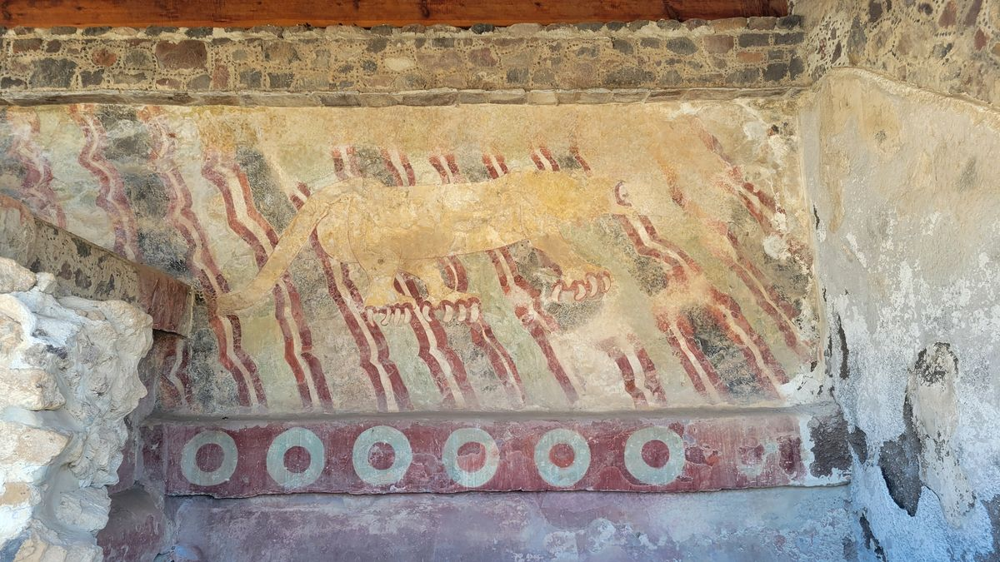

Mexico City - Teotihuacán
When visiting the capital of México one of the must see attractions is the pre-Aztec (yes before the Aztec’s) pyramids of Teotihuacán. About an hour outside the city, though they are accessible to those daring enough to venture through various modes of public transport. Usually, this is what I would do. But, I had grown frustrated by México’s City’s public transport system and chose to book a guided tour instead. This was beneficial in more ways than one.
People sing the praises on the capitals public transport system. I don’t agree. While it was handy in some instances, I found it to be unreliable, in one instance I was less than 1km from my destination when the driver made in inaudible announcement, stopped the bus, and everyone got off. I continued along the route we were supposed to follow and found another half dozen buses doing the same thing. It was always crowded. Twice I missed my stop, because I was unable to maneuver myself, politely, to the door before they took off. The metro card I purchased was missing 10 pesos of credit, even after verifying the amount on the screen when I purchased it. Routes that were supposed to run every few minutes would have no busses and I would be directed to the cash only Rutas. Maybe I just don’t understand the nuances of public transit in México, but after a week, it still continued to find new ways to baffle me.

I meet my group bright and early outside the Palace of Fine Arts and after initial greetings we made our way to the pyramids of Teotihuacán. One trolley ride and a suburban bus later we arrived at the main gate to the site. Of course, you can’t go to these places without first being bombarded by shops selling the typical tourist curios. Sombreros, Ponchos, T Shirts, noise makers overpriced sunscreen. Thankfully our guide hurried us past the stalls and we got the tour started at the Temple of Quetzalcoatl. This pyramid is one you are actually able to climb and a seating area has been built so your guide can give a brief lecture about the 2 gods depicted, Quetzalcoatl and Tlaloc. Quetzalcoatl is the god of the Sun. Tlaloc, the god of water. Amongst other things.

Little conclusive is known about Teotihuacán and its inhabitants. It's originally inhabitants had no known writing system and the city was practically abandoned sometime around 650AD for unknown reasons (archaeologists and anthropologists believe it may have been due to civil strife towards the ruling class, but there is still much debate as to why). A lot of what we do know is because of what was carried on to later societies.
We made our way down the main road of the complex, called The Avenue of the Dead. And stopped at the remains of the living quarters of the city. The city, in total was over 21km2(13mi2 appx). The current park that’s accessible to tourists is only about 10km2. If you lived this close to the center of the city it was safe to assume you were higher up in Teotihuacano society. Familes lived in multi family compounds, which is one of the things that made Teotihuacán society stand apart from others in the same time in history.

Continuing down the Avenue of the Dead we made a few more stops to admire remaing murals and other artwork still intact. Think of the Pyramids of Teotihuacán as giant Russain Stacking Dolls. One would be built, and decades or centuries later, they would decide to build another, on top of the other. They would build the new temple and, just using fill, like rocks and dirt to seal the space between the 2 pyramids. This would leave the original pyramid sealed from the elements for hundreds or thousands of years. Archaeologists carefully reveal these older layers, giving us an unprecedented view of the ancient world.


We eventually approached the first of the 2 largest pyramids on the site. The Pyramid of the Moon. As I wrote earlier, we know very little about this society and why they did what they did. The pyramids are flat on top, leading us to believe that they were used as some sort of altar. Ceremonies and sacrifices, both animal and human, were performed on top.

The largest of the pyramids in Teotihuacán, the Pyramid of the sun sits a staggering 216 feet tall. And measures, 720x760 feet at its base. Again, we know very little about the reasoning for its creation. Similar to the Pyramid of the Moon. It seemed to be used as an altar for religious ceremonies.

After getting our requisite selfies and photos with the pyramids we made our way to the exit. We spent about 4 hours in total in the archaeological site. It was time well spent. We can read about these places and society’s all we want but, nothing will compare to physically being amongst the stones and temples that were centerpieces of these cultures. The appreciation I have for these monuments is unquestioned now and will be adding more pre-Colombian sites to my itinerary.
P.S. There’s almost no interpretive signs inside the complex of Teotihuacán. A guide is an absolute necessity unless you like wandering around trying to guess what a bunch of stacked rocks could mean.